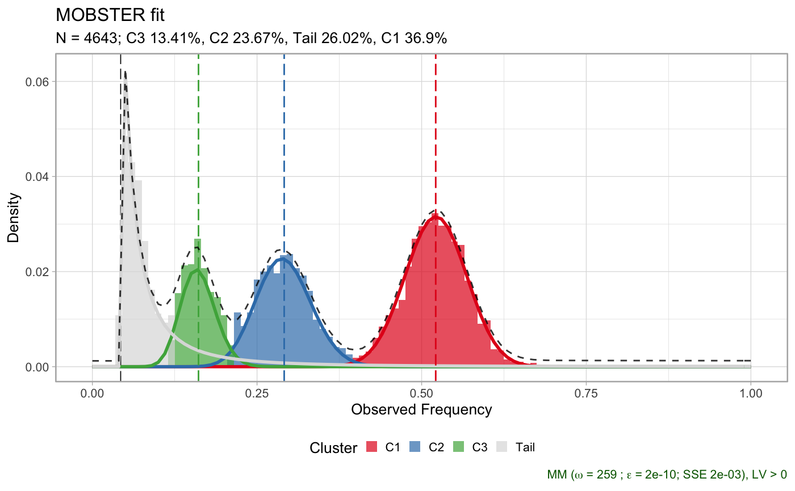

PD4120a_breast_sample.RdMOBSTER fit for the PD4120a breast sample; this object is the result of running `mobster_fit` function on the input data described in the main MOBSTER paper.
data(PD4120a_breast_sample)
Data from an example MOBSTER fit.
#> [ MOBSTER ] N = 4643 points with K = 3 Beta clusters, fit by MM in 259 steps [CONVERGED] #> #> Components (fit) #> Tail n = 1006 (0.26) Shape = 1.5 #> Beta C1 n = 1740 (0.37) Mean = 0.52 #> Beta C2 n = 1167 (0.24) Mean = 0.29 #> Beta C3 n = 730 (0.13) Mean = 0.16 #> #> Scores (model selection) #> NLL BIC AIC entropy ICL reduced.entropy reICL size #> -3201.73 -6302.143 -6379.461 955.2519 -5346.891 188.3106 -6113.833 12